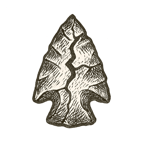

The Arrow You Hold

Introduction
There is a moment, before any arrow flies, when it rests between the archer’s fingers: poised, still, full of possibility. This book stands in that moment.
You are holding a story about stories: the long arc of human civilization, the thin arc of a single life, and the moral, scientific, and technical arrows we are shaping now. It asks how we got here—from atoms to algorithms, from campfires to cloud infrastructures, from inherited myths to machine-generated worlds—and what kind of future we risk or promise with each arrow we release.
This is a book about emergence and stasis, about tools and values, about monsters and castles, and about the possibility that we might still learn to build more wisely before our systems—human and machinic alike—outrun our judgment.
Why this book exists
I wrote this book because I believe the questions before us now—about AI, economy, justice, knowledge, care, and meaning—cannot be answered by technology alone. They also cannot be answered by nostalgia, by ideology, or by the ordinary administrative rituals of a civilization that too often mistakes procedure for wisdom.
They require us to look backward and downward: at the castles we built, the monsters we met, the stories that organized us, the systems that scaled us, and the fractures that remained hidden until the walls began to crack. They also require us to look forward with more discipline than hope alone can offer. If we are to approach anything worthy of the name singularity, it must be a humane one—one in which intelligence serves life rather than devours it, one in which systems learn to sense, adapt, and steward rather than merely optimize and consume.
This book traces what I call the thick arrow: the long civilizational arc from cosmos to code. It also follows a thin arrow: my own life’s path, with its moments of wonder, confusion, failure, work, caregiving, and uneasy recognition. Together, these arrows ask what happens when personal trajectories collide with the deeper structures of history—and whether those structures can still be redesigned.
What follows is not a textbook. It is not a manifesto. It is not a sealed doctrine. It is a woven map of memory, knowledge, critique, and possibility. It asks you to travel with me through what emerged, what got stuck, and what might yet be built differently.
How this book is woven
This book is divided into three volumes, each distinct in purpose but joined to the others like movements in a larger composition. They do not merely follow one another in sequence; they deepen and reinterpret one another.
The first volume traces emergence and wonder, the second turns that wonder into diagnosis, and the third asks what design becomes possible once we have learned to see both the grandeur and the fractures of what we built.
Volume I — Φ: The First Archers
Volume I is the ascent.
It traces the emergence of the physical universe, life, mind, society, and the systems that scaffold civilization. These chapters move from physics to biology, from brain to psychology, from society to industry, economics, politics, ideology, ecology, and finally information and artificial intelligence. Along the way, they pair personal recollections with deeper explorations of the domains that shaped both civilization and my own life.
Volume I is the volume of wonder, but not naïve wonder. Each domain contains:
a castle — the system or shelter we built,
a monster — the failure, cost, or threat hidden within it,
and an upheaval — the jolt that reveals what the castle could not fully protect.
It is the volume in which the reader is brought from cosmos to code, and from childhood memory to the threshold of machine intelligence.
Volume II — Δ: The Still Arrow
Volume II is the reckoning.
If the first volume asks how the world thickened, the second asks why, despite all that movement, so much remains stuck in the ways that matter most. Here the emphasis shifts from emergence to diagnosis: missed signals, runaway dynamics, rigid stories, fractured morals, vanishing commons, still tools, still minds, and the systems that keep reproducing versions of the same old wound.
These chapters draw on both personal experience and broader civilizational patterns. They are not arranged merely by domain, but by recurring failure types—the ways institutions, myths, models, technologies, and human minds can become blind, brittle, or captured.
Volume II is not cynicism. It is preparation for design.
Volume III — Θ: The Basket We Weave
Volume III is the design horizon.
Here the book turns from diagnosis to recipes—not rigid blueprints, but evolving sketches and architectural directions for governance, economy, education, healthcare, commons, justice, memory, and the future of intelligence itself. This volume draws increasingly on my broader NEURO / NEU vision and on the idea that civilization may be missing a mature layer of collective cognition: a distributed cognitive commons I later call Neusphere.
If Volume I is witnessing and Volume II is diagnosis, Volume III is invitation. It asks not merely what has gone wrong, but what it might feel like to inhabit something better—and what must be built so that “better” does not quietly become another cage.
The chapters and the interludes
Scattered between the main chapters are interludes. These are not sidebars or optional decorations. They are parallel mirrors. Their role changes across the trilogy.
In Volume I, the interludes form the clearest Silicon mirror to the main chapters’ Carbon ascent. As the chapters explore the emergence of our human, natural, and civilizational world, the interludes trace the rise of the machinic and computational world: from semiconductors and data to software, networks, cloud, and the AI stack. They show how our tools emerged in parallel to our institutions—and how, increasingly, they begin to reflect and reshape them.
In Volume II, the interludes take on a broader diagnostic role. They become more than technical companions. They function as instrument panels: concise explorations of the underlying machinery, substrates, mechanisms, and implementable cases that illuminate the pathology under discussion. A chapter about signal loss may be mirrored by sensing and IoT; one about hidden structure by quantum mechanics and computation; one about caged models by cryptography, privacy, and encapsulation. They still often end in the technological or computational domain, but they begin more broadly—scientific, philosophical, or structural—so that the reader sees not merely the “tech side,” but the deeper architecture beneath the symptom.
In Volume III, the interludes shift again. They become the builder’s mirror to the chapters’ lived civic futures. If the main chapters ask what it is like to live inside a better civilization, the interludes ask what must be built—architecturally, ethically, institutionally, technically—so that such a civilization can exist without becoming fraud, capture, or spectacle.
So the interludes are not simply technical appendices. They are machinery under the story, substrate beneath the value, and builder-side reflections to citizen-side worlds.
They can be read alongside the chapters for a synchronized journey, or revisited later as a second, parallel path through the book.
A thin arrow among many: why the personal stories are here
Throughout the book, you will encounter stories drawn from my own life—moments of wonder, shame, fear, work, migration, study, confusion, caretaking, and insight. These are not fictionalized morality plays. They are presented as lived recollections, sometimes raw, often reflective, and always there for a reason.
Why include them?
Because each of us carries what I call a thin arrow: the singular trajectory of our own life through the larger weather of the world. My thin arrow is not offered as representative because it is special. It is offered because it is honest. By threading it through the larger arcs of science, technology, history, and civilizational failure, I hope to make the book’s bigger ideas tangible without pretending they descend from nowhere.
A plane ride becomes a meditation on existence. A school assembly becomes a lesson in blind systems. A broken machine becomes a lesson in humility and alignment. A loved one’s illness becomes an x-ray of modern healthcare. A consulting role, a city, a migration, a crisis—each becomes a local window into a larger structure.
The personal stories are there not to reduce the book to memoir, but to keep its abstractions answerable to lived reality.
How to read the interludes
You can read the interludes in several ways.
Read them in sequence with the chapters, and let them deepen the chapter’s concerns immediately.
Skip them at first, and return later as a second pass through the book’s hidden machinery.
Dip into them selectively where your curiosity is strongest.
They are designed to demystify rather than overwhelm. They are not exhaustive textbooks. They are compact but potent explorations—keys rather than encyclopedias. Their job is to unlock confidence, context, and literacy: enough understanding to let the reader critique, imagine, and perhaps someday help build.
Together, they:
illuminate the often invisible substrates of modern civilization,
show how tools and architectures become forms of power,
and prepare the reader not just to follow the book’s later recipes, but to question them well.
The larger role of the interludes
Much of this book charts the thin arrow of my own life, but from the beginning the questions were never only about myself. They were about the systems we all live inside.
How does a circuit become a decision?
How does a language of bits become a marketplace, a border, a hospital, a courtroom, a public square?
How does an architecture of data become an architecture of trust—or control?
How do tools that begin as assistance become environments?
The interludes reflect the same impulse that shaped my path from curious child to engineer, consultant, critic, and would-be builder: the urge to understand what is hidden inside our machines, our abstractions, and our systems of coordination.
If the chapters tell the story of our arrows—personal and collective—the interludes reveal the bowstrings, gears, rails, membranes, and protocols that determine how those arrows fly, where they bend, and what they strike.
How to read this book
This book can be read linearly, and that is how it is designed to bloom. But it can also be entered by urgency.
Volume I offers context and wonder.
Volume II offers diagnosis and structure.
Volume III offers recipes and invitations.
The chapters carry the main narrative arc. The interludes enrich, challenge, and equip. Each chapter often opens with a stark scene or small revelation—true or imagined, depending on the volume’s role—designed to concentrate the chapter’s concern before the wider analysis unfolds.
You need not read everything in order. But if you do, the pattern is deliberate.
Volume I follows a life and a civilization through emergence.
Volume II re-enters experience as diagnostic specimen and structural critique.
Volume III turns outward and forward, increasingly asking you to inhabit what has not yet been built.
Bring your own questions. Argue in the margins. Refuse what deserves refusal. Add your own arrows.
The book does not aim to deliver certainty. It aims to make clearer seeing—and better weaving—possible.
A path, not a prison
This book is not a closed system. It is meant to remain porous.
Its arguments will evolve. Its recipes are not sacred. Its diagnosis is meant to sharpen rather than flatten. If the book succeeds, it will not trap the reader in my framework, but help them see where their own framework begins to shift.
The world ahead will not be saved by obedience to one author’s architecture. It will be built, if it is built well at all, by many minds learning how to sense, deliberate, and revise together.
In that sense, the book itself is a rehearsal for a larger wager:
that intelligence need not culminate in domination;
that technology need not culminate in enclosure;
and that singularity, if it is to mean anything worth surviving, must be woven with dignity, plurality, and care.
A final word before we begin
This book is many things:
a memoir of a thin arrow shaped by fracture and wonder,
a chronicle of the thick arrow of civilization,
a diagnostic kit for those willing to look clearly,
and a basket of tools for those willing to weave again.
It is also a mirror.
As you read, I hope you will notice not only my stories and my systems, but also your own:
the rooms that did not understand you,
the frameworks that failed you,
the institutions that managed instead of caring,
the moments in which possibility flickered and then disappeared,
and the places where, perhaps, it has not disappeared yet.
The pages ahead will move widely: through physics and biology, through memory and migration, through software and medicine, and through markets, media, ideology, ecology, AI, and the futures they are forcing into view.
They do not promise comfort. They promise clarity—and with it, the chance to move, together, toward a singularity worthy of the name.
So let us begin—with a memory, a flicker, a boy in a plane suspended between worlds.